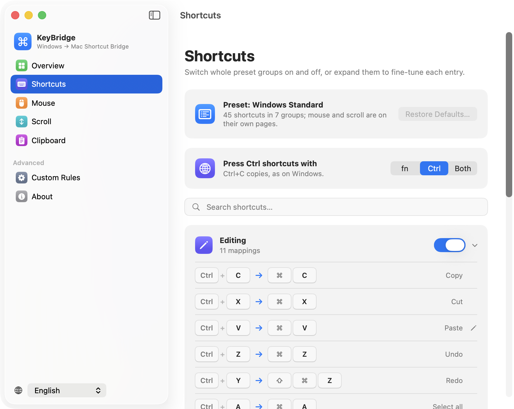

For everyone who moved from Windows to Mac
Your Windows shortcuts, on your Mac.
KeyBridge makes Ctrl+C copy, Home and End jump to the ends of the line, and your mouse’s side buttons go back and forward, so years of muscle memory keep working.
Free and open source · macOS 14 or later

Your hands already know what to do.
A Mac does many everyday things with different keys, or not at all. KeyBridge turns what you press into what the Mac expects.
| On Windows | On a Mac | With KeyBridge |
|---|---|---|
| Ctrl+C Ctrl+V Ctrl+Z | It’s ⌘ for copy, paste and undo | Copy, paste, undo, save, find… |
| Home End | Scrolls to the top or bottom of the page | Start and end of the line |
| Ctrl+← Ctrl+→ | Switches desktops | Moves a word at a time |
| Mouse side buttons | Do nothing | Back and forward |
| Ctrl+scroll | Zooms the whole screen, or nothing | Zooms the page, with fn or Ctrl |
| Mouse wheel direction | Reversed, together with the trackpad | Windows direction, trackpad untouched |
| Delete F2 Enter in Finder | Enter renames, the others do nothing | Delete, rename, open |
| Alt+Tab Alt+F4 | It’s ⌘+Tab and ⌘+Q | Switch apps, quit |
| Ctrl+Shift+Esc | Nothing | Opens Activity Monitor |
| PrtScn | Nothing | Screenshot to the clipboard |
| Win+V clipboard history | Doesn’t exist | Built in, with ⇧⌘C |
Thought through for the switch.
Any keyboard
Works with a PC keyboard and with a Mac keyboard. Press Ctrl as on Windows, or use fn in its place and keep Ctrl for the Mac. Your choice, or both.
Terminals left alone
In Terminal and iTerm, Ctrl+C still stops the running program. KeyBridge knows where Ctrl means something else.
Yours to adjust
Switch whole groups on and off, record a different shortcut for any entry, or write your own rules, for every app or just one.
Mouse and trackpad apart
Wheel direction and zoom change for the mouse only. Trackpad gestures keep working the Mac way.
Small and quiet
Lives in the menu bar and pauses with one click. No system extension or keyboard driver to install.
In your language
English, 简体中文 and 日本語, with more languages to follow.
Clipboard history, like Win+V.
Press ⇧⌘C for everything you copied recently, right where your pointer is. Pick one and it’s pasted.
- Text, images and files, searchable
- Pin what you paste often
- Passwords from password managers are never kept
- Stays on your Mac, never uploaded. Off until you turn it on.
Two permissions, and why.
macOS asks you to allow two things before any app may change what your keys do.
KeyBridge records no keystrokes. It looks at each key press only to decide whether it’s a shortcut to translate, then lets it go. There are no analytics, and every line of the code is public.
Get KeyBridge.
macOS 14 or later · free
Or with Homebrew:
brew install --cask lynnjeans/tap/keybridge- Open KeyBridge, and it walks you through the two permissions.
- Using Karabiner-Elements or a similar tool? Quit it while KeyBridge runs, so the two don’t fight over the same keys.
Questions
How do I make Ctrl+C copy on a Mac?
macOS uses ⌘ (Command) for copy, paste and most shortcuts. Install KeyBridge and it’s on: Ctrl+C, Ctrl+V, Ctrl+Z, Ctrl+S and the rest do what they did on Windows, everywhere except terminals, where Ctrl+C has to stop programs.
Why don’t Home and End work on a Mac?
On a Mac, Home and End scroll to the top and bottom of a document, and the start or end of a line is ⌘← and ⌘→. KeyBridge sends those for you, and Shift+Home, Shift+End, Ctrl+Home and Ctrl+End select and jump as they did on Windows.
Does it work with an Apple keyboard?
Yes. The Control key sits where it did on your PC. If you’d rather keep Ctrl for Mac shortcuts, choose fn and press fn+C to copy instead.
Is KeyBridge free?
Yes, and open source under the GNU General Public License v3. Anyone can read, build and improve the code.
How is it different from Karabiner-Elements?
Karabiner-Elements is a powerful tool for remapping single keys and building layers. KeyBridge does one job, Windows habits on a Mac, ready to use at first launch, and handles the mouse and scroll wheel too. It needs no system driver.